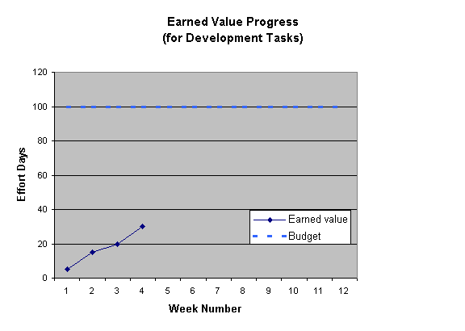
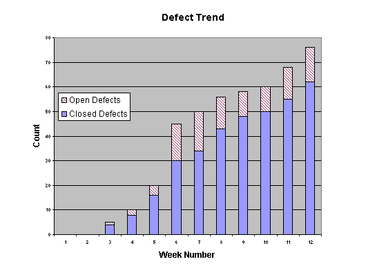
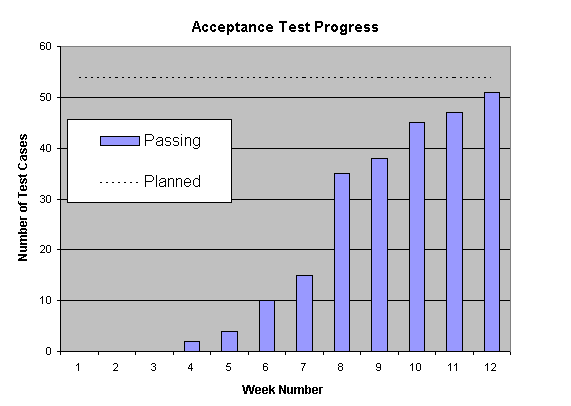

| Рекомендация: Показатели |
 |
|
| Связанные элементы |
|---|
Основные принципы
Таксономия показателейСуществуют показатели для различных аспектов проекта, в том числе:
Важнее отслеживать тенденции, чем абсолютные значения показателей.
Минимальный набор показателейДаже для небольших проектов требуется отслеживание хода разработки для определения, укладывается ли разработка в сроки и бюджет и, если это не так, переоценки этих значений и определения, требуется ли изменение требований. Данный минимальный набор показателей концентрируется на непосредственном отслеживании хода разработки.
Далее приведено более подробное описание. Выполненная стоимостьНаиболее часто используемый метод ([PMI96]) измерения степени завершенности проекта - метод "освоенного объема" (Earned Value Analysis). Наиболее простой способ измерения выполненной стоимости - суммирование изначальных оценок для всех завершенных задач. "Выполнение в процентах" определяется отношением выполненной стоимости к общей изначальной оценке трудоемкости проекта. Эффективность работы (или КПД) - отношение выполненной стоимости к фактическим трудозатратам на выполнение завершенных задач. Например, предположим, что написание кода разделено на несколько задач, большинство из которых уже завершено. Согласно начальным оценкам выполнение завершенных задач должно было потребовать 30 дней. Общая оценка для проекта - 100 дней, так что согласно используемому методу проект завершен на 30%. 
Предположим, что для выполнения задач потребовалось только 25 дней. КПД равен 30 / 25 = 1.2, или 120%. Особенности показателя
Если задачи большие (более пяти дней) или много завершенных частично задач, их также можно включить в анализ. Прибавьте к выполненной стоимости оценку для выполненной частично задачи, умножив ее на процент завершенности этой задачи. Результаты будут более согласованы если будут использоваться четкие правила определения процента выполнения. Например: задаче по программированию не может быть присвоен процент выполнения 80% или больше пока код не прошел контроль.
Более подробно метод "освоенного объема" обсуждается в разделе Полный набор показателей: План
проекта ниже. Тенденции обнаружения и устранения дефектовЧасто оказывается полезным следить за тенденциями открытия и закрытия дефектов. Это позволяет грубо оценить объем работы, которую еще потребуется выполнить по устранению дефектов, и как быстро ее удастся выполнить.  Тенденции обнаружения и устранения дефектов - один из показателей, предоставляемых Rational ProjectConsole. Особенности показателя
Тенденции степени выполнения
Основной мерой степени завершенности является объем интегрированной функциональности.
Часть выполненных работ проще всего представляется в виде показателя степени выполнения.  Особенности показателяНекоторые тестовые наборы могут отражать значительно большую стоимость или трудоемкость, чем остальные. Не углубляйтесь в изучение этого графика - это всего лишь способ демонстрации того, что разработка нужной функциональности не стоит на месте.Простой набор показателейДля большинства проектов минимального набора показателей, описанных выше, оказывается недостаточно. В Software Project Management, a Unified framework [ROY98], для всех проектов рекомендуется использовать следующий набор показателей. Обратите внимание, что для расчета этих показателей требуются оценка количества строк исходного кода (SLOC) и фактические данные для каждого запроса изменения, на сбор которых также требуется некоторые трудозатраты. Показатели и элементарные показатели
Показатели качества конечного продуктаНа основе данного набор показателей могут быть получены другие полезные показатели:
Текущие индикаторы
Полный набор показателей
Что необходимо измерять?
|
||||||||||||||||||||||||||||||||||||||||||||||||||||||||||||||||||||||||||||||||||||||||||||||||||||||||||||||||||||||||||||||||||||||||||||||||||||||||||||||||||||||||||||||||||||||||||||||||||||||||||||||||||||||||||||||||||||||||||||||
|
Показатели |
Комментарии |
|---|---|
| Продолжительность | Время, затраченное на задачу |
| Трудоемкость | Единицы трудозатрат (человеко-часы, человеко-дни, ...) |
| Результаты работы | Рабочие продукты и их количество и размер (сюда включаются и дефекты, как результаты задач тестирования) |
| Использование среды разработки | Процессорное время, дисковое пространство, ПО, аппаратное обеспечение (компьютеры и т.д.), канцелярия. Эти компоненты могут собираться специальной группой, отвечающей за среду создания программного продукта (Software Engineering Environment Authority - SEEA). |
| Дефекты, частота их обнаружения и устранения. | Также необходимо собирать: время/трудозатраты на исправление и брак/переработка для всего проекта (везде, где их измерение возможно). Эта информация получается из данных о дефектах (которые также считаются рабочими продуктами). |
| Запросы изменения, частота появления незапланированных задач, частота удаления кода. | Комментарии аналогичны комментариям для продолжительности/трудоемкости. |
| Побочные обстоятельства, воздействующие на эти показатели (текст в свободной форме) | Это показатель, т.к. это фиксирование событий, влияющих на процесс. |
| Персонал | |
| Текучесть кадров | Показатель, полезный при анализе причин успеха или неудачи. |
| Эффективность трудозатрат |
Информация о том, на что тратится время, отведенное для выполнения запланированных заданий, может
помочь объяснить изменения продуктивности. Некоторые из подклассов задач:
|
| Проверки, критический анализ и инспектирование (в рамках задач, т.е. не планируемые отдельно) | Фиксируйте число таких проверок и их длительность, а также число поднимаемых вопросов. |
| Отступление от плана (какие-либо несовместимости, требующие изменения в масштабе проекта) | Фиксируйте число таких отклонений и их серьезность. Отступления от планов обычно говорят о недостаточном обучении разработчиков, неправильном применении или конфигурации процесса. |
| Неполадки процесса (дефекты процесса, требующие его изменения) | Фиксируйте число таких неполадок и их серьезность. Эта информация будет полезна при анализе причин успеха или неудачи. Кроме того, она будет существенной для совета по организации процесса разработки продукта (Software Engineering Process Authority - SEPA). |
Продукт
Продуктами в Rational Unified Process (RUP) являются т.н. рабочие продукты, а именно: документация, модели и их элементы. Модели представляют собой наборы аналогичных объектов (элементов). Далее приведены показатели, рекомендуемые для различных моделей или их элементов. В большинстве случаев очевидно, к чему относится показатель: к модели в целом или к ее элементу. В остальных случаях это указывается явно.
Характеристика рабочего продукта
Обычно рабочий продукт характеризуется следующими параметрами:
- Размер - - число компонентов в модели, длина чего-либо, объем, масса
- Качество
- Дефекты - несоответствие поведения продукта его спецификациям или наличие других нежелательных параметров
- Сложность - мера запутанности структуры или алгоритма: чем больше сложность, тем труднее понять и изменять структуру. Кроме того, в сложной системе более вероятно появление ошибок
- Взаимосвязь - мера зависимости элементов системы друг от друга
- Связность - степень выполнения требования, чтобы элемент или компонент имел одну, четко обозначенную цель
- Элементарность - мера возможности составления операций или методов класса из других методов, предоставляемых классом
- Завершенность - мера объема выполнения всех требований продуктом (как явных, так и неявный -руководитель проекта должен составить как можно больше явных требований, для уменьшения вероятности несоответствия продукта ожиданиям заказчика). Здесь не разделяется достаточность и полнота.
- Трассируемость - индикатор выполнения требований на определенном уровне. С другой стороны - индикатор того, что есть смысл продолжать разработку.
- Изменчивость - мера частоты изменений или степень неготовности рабочего продукта из-за дефектов или изменения требований
- Трудоемкость - трудозатраты (например, человеко-дни) требуемые для получения рабочего продукта
Не все из перечисленных параметров применимы к любому продукту: далее приведены таблицы с параметрами, подходящие к определенным рабочим продуктам. В случаях, когда для параметра даются несколько показателей, интерес представляют все показатели, поскольку они вместе дают полное и всестороннее описание параметра. Например, при рассмотрении трассируемости вариантов использования трассируемость модели протестированной реализации должна быть полной: в тоже время, руководителю проекта по-прежнему будут интересно число вариантов использования, прослеживаемых до модели анализа, в качестве меры выполнения.
Документы
Рекомендуемые показатели относятся ко всей документации RUP.
|
Параметр |
Показатели |
|---|---|
| Размер | Число страниц |
| Трудоемкость | Трудозатраты на создание, изменение и исправление |
| Изменчивость | Число изменений, дефектов, открытых и закрытых; число измененных страниц |
| Качество | Определяется непосредственно числом дефектов |
| Завершенность | Не измеряется непосредственно: суждение создается на основе информации, полученной при контроле |
| Трассируемость | Не измеряется непосредственно: суждение создается на основе информации, полученной при контроле |
Модели
Требования
Атрибуты требований
Это - элемент модели.
Параметр Показатели Размер
- общее число требований (= Nu+Nd+Ni+Nt)
- число требований, соответствие которым отслеживается в вариантах использования ( = Nu)
- число требований, соответствие которым отслеживается при проектировании, реализации и тестировании ( = Nd)
- число требований, соответствие которым отслеживается при реализации и тестировании ( = Ni)
- число требований, соответствие которым отслеживается только при тестировании ( = Nt)
Обратите внимание на то, что такое разбиение выделяет требования, которые будут моделироваться в вариантах использования (остальные требования в таком моделировании не участвуют). Предполагается, что трассируемость требований в вариантах использования подразумевает контроль выполнение требований на этапах проектирования, реализации и тестирования.
Трудоемкость
- Трудозатраты на создание, изменение и исправление
Изменчивость
- Число дефектов и запросов изменения
Качество
- Число дефектов, по серьезности
Трассируемость
- Трассируемость требований в вариантах использования = Модель для отслеживания требований в вариантах использования/Nu
- Трассируемость проектирования = Модель для отслеживания требований на этапе проектирования/Nd
- Трассируемость реализации = Модель для отслеживания требований на этапе реализации/(Nd+Ni)
- Трассируемость тестирования = Модель для отслеживания требований на этапе тестирования/(Nd+Ni+Nt)
Параметр Показатели Размер
- Число вариантов использования
- Число пакетов вариантов использования
- Уровень варианта использования, согласно отчетам (см. документ "The Estimation of Effort and Size based on Use Cases" на Web-сайте IBM)
- Числе сценариев, общее и отдельно по вариантам использования
- Число субъектов бизнес-процесса
- Размер варианта использования (например, страниц описания последовательности событий)
Трудоемкость
- Трудозатраты на создание, изменение и исправление
Изменчивость
- Число дефектов и запросов изменения
Качество
- Сложность, согласно отчетам (0-5, по аналогии с COCOMO [BOE81], на уровне класса; диапазон сложности становится уже на более высоких уровнях абстракции - см. документ "The Estimation of Effort and Size based on Use Cases" на Web-сайте IBM)
- Дефекты - число дефектов, по серьезности, открытых и закрытых
Завершенность
- Работающие варианты использования (проверенные и не имеющие связанных дефектов)/идентифицированные варианты использования (или оценка их количества)
- Трассируемость требований в вариантах использования (для атрибутов требований)
Трассируемость
- Анализ
- Число сценариев, выполняемых в модели анализа/общее число сценариев
- Проектирование
- Число сценариев, выполняемых в модели проектирования/общее число сценариев
- Реализация
- Число сценариев, выполняемых в модели реализации/общее число сценариев
- Тестирование
- Число сценариев, выполняемых в модели тестирования/общее число сценариев
Эскиз
Параметр Показатели Размер
- Число классов
- Число подсистем
- Число подсистем неединичной глубины
- Число пакетов
- Число методов на класс, внутренних, внешних
- Число атрибутов на класс, внутренних, внешних
- Глубина наследования
- Число потомков
Трудоемкость
- Трудозатраты на создание, изменение и исправление
Изменчивость
- Число дефектов и запросов изменения
Качество Сложность
- Реакция для класса: расчет достаточно сложен, т.к. требует полный набор диаграмм взаимодействия.
Взаимосвязь
- Число потомков
- Взаимосвязь объектов (разветвление классов)
Связность
- Число потомков
Дефекты
- Число дефектов, по серьезности, открытых и закрытых
Завершенность
- Число готовых классов/оценка общего числа классов (число идентифицированных классов)
- Трассируемость анализа (в модели вариантов использования)
Трассируемость Не применимо - модель анализа становится моделью проектирования.
Здесь мы сталкиваемся с техническими показателями из области объектно-ориентированного программирования, с которыми руководитель может быть не знаком -глубина наследования, число потомков, реакция для класса, взаимосвязь объектов. Эти показатели обсуждаются в документе [HEND96]. Некоторые из них были предложены Чидамбером и Кемерером (Chidamber и Kemerer; см. "A metrics suite for object oriented design", IEEE Transactions on Software Engineering, 20(6), 1994), но они использованы в соответствии с рекомендациями [HEND96]. Также, используется определение недостатка связности методов (lack of cohesion in methods - LCOM) по этой же работе.
Параметр Показатели Размер
- Число классов
- Число подсистем проектирования
- Число подсистем неединичной глубины
- Число пакетов
- Число методов на класс, внутренних, внешних
- Число атрибутов на класс, внутренних, внешних
- Глубина наследования
- Число потомков
Трудоемкость
- Трудозатраты на создание, изменение и исправление
Изменчивость
- Число дефектов и запросов изменения
Качество Сложность
- Реакция для класса: расчет достаточно сложен, т.к. требует полный набор диаграмм взаимодействия.
Взаимосвязь
- Число потомков
- Взаимосвязь объектов (разветвление классов)
Связность
- Число потомков
Дефекты
- Число дефектов, по серьезности
Завершенность
- Число готовых классов/оценка общего числа классов (число идентифицированных классов)
- Трассируемость проектирования (в модели вариантов использования)
- Трассируемость проектирования (для атрибутов требований)
Трассируемость Число классов в модели реализации/общее число классов
Реализация
Параметр Показатели Размер
- Число классов
- Число файлов
- Число подсистем реализации
- Число подсистем неединичной глубины
- Число пакетов
- Число методов на класс, внутренних, внешних
- Число атрибутов на класс, внутренних, внешних
- Размер методов*
- Размер атрибутов*
- Глубина наследования
- Число потомков
- Оценка размера* по завершении
Трудоемкость
- Трудозатраты отдельно на создание, изменение и исправление
Изменчивость
- Число дефектов и запросов изменения
- Объем кода, работа которого нарушается* каждым изменением (исправлением или усовершенствованием), оценка (до выполнения) и фактическое значение (после выполнения)
Качество Сложность
- Реакция для класса (Response For a Class - RFC)
- Цикломатическая сложность методов**
Взаимосвязь
- Число потомков
- Взаимосвязь объектов (разветвление классов)
- Взаимосвязь при передаче сообщений (Message passing coupling - MPC)***
Связность
- Число потомков
- Недостаток связности методов (Lack of cohesion in methods - LCOM)
Дефекты
- Число дефектов, по серьезности, открытых и закрытых
Завершенность
- Число комплексно протестированных классов/число классов в модели проектирования
- Число интегрированных классов/число классов в модели проектирования
- Трассируемость реализации (в модели вариантов использования)
- Трассируемость реализации (для атрибутов требований)
- Произведение трассируемости модели тестирования на полноту тестирования
- Активное время, потраченное на интеграцию и тестирование системы (собирается из процесса тестирования), т.е. время, взаимодействия работников с системой (используется для расчета зрелости)
* Следует выбрать один метод измерения размера кода и придерживаться его на протяжении всего цикла жизни. Например, это может быть число непустых строк кода, не являющихся комментариями. Достоинства и применение размера кода в качестве показателя обсуждается в [ROY98]. Также в указанной книге дается определение нарушения работы кода (breakage).
** Использование цикломатической сложности принимается не везде, и в отношении методов класса в частности. Этот показатель обсуждается в [HEND96].
*** По книге Li and Henry, "Object-oriented metrics that predict maintainability", J. Systems and Software, 23(2), 1993. Также описание дается в [HEND96].
Тестирование
Модель тестирования
Параметр Показатели Размер
- Число тестовых наборов, процедур, сценариев
Трудоемкость
- Трудозатраты отдельно на создание, изменение и исправление тестовых наборов и т.д.
Изменчивость
- Число дефектов и запросов изменения в модели тестирования
Качество
- Дефекты - число дефектов, по серьезности, открытых и закрытых (имеются в виду дефекты в самой модели тестирования, а не дефекты, найденные в тестируемых программах)
Завершенность
- Число созданных тестовых наборов/оценка общего числа тестовых наборов
- Трассируемость тестирования (в модели вариантов использования)
- Трассируемость тестирования (для атрибутов требований)
- Охват кода
Трассируемость
- Число тестовых наборов, отмеченных как успешные в Сводных результатах оценки тестирования/общее число тестовых наборов
Управление
Модель изменений - - это условная модель для согласования представления - сбор показателей осуществляется системой, используемой для управления запросами изменения.
Параметр Показатели Размер
- Число дефектов, запросов изменения по серьезности и состоянию, а также отдельно по каждому роду изменений: усовершенствование, адаптирование, исправление.
Трудоемкость
- Трудозатраты на исправление дефектов, реализацию изменений (например, в человеко-днях)
Изменчивость
- Нарушение работы кода (оценка, фактическое значение) для подмножества модели реализации.
Завершенность
- Число обнаруженных дефектов/оценка числа обнаруженных дефектов (при использовании модели надежности)
План проекта (раздел 4.2 Плана разработки программного обеспечения)
Эти значения получаются при использовании в управлении проектом метода "освоенного объема". Их объединение называется критериями контроля стоимости и графика хода работ (Cost/Schedule Control Systems Criteria - C/SCSC). Этот метод в упрощенном виде рассмотрен выше в описании минимального набора показателей. Более подробный анализ можно выполнять на основе связанных показателей, в т.ч.:
- Бюджетная стоимость запланированных работ (BCWS - Budgeted Cost for Work Scheduled)
- Бюджетная стоимость выполненных работ (BCWP - Budgeted Cost for Work Performed)
- Фактическая стоимость выполненных работ (ACWP - Actual Cost of Work Performed)
- Бюджет по завершении работ (BAC - Budget at Completion)
- Оценка конечной стоимости (EAC - Estimate at Completion)
- База бюджета по контракту (CBB - Contract Budget Base)
- Последняя редакция сметы (LRE - Latest Revised Estimate) - EAC
зависят от цены и плана. Применение метода "освоенного объема" в управлении проектам разработки ПО обсуждается в [ROY98].
Проект
Проект должен характеризоваться типом, размером, степени сложности и формальности (хотя последнее обычно определяется первыми), т.к. эти параметры обуславливают пороговые значения других, низкоуровневых, параметров. В контракте (или спецификациях) должны быть зафиксированы все условия и ограничения. Показатели процесса, продукта и ресурсов определяют все остальные показатели уровня проекта. Тип проекта и предметную область можно фиксировать в форме описания проекта. Степень подробности должна быть достаточной для определения точной характеристики проекта. Фиксируйте размер проекта по стоимости, трудоемкости, срокам, размеру кода, который необходимо написать, функциональной оценке. Сложность проекта можно описать, хотя и несколько субъективно, - посредством диаграммы, показывающей техническую и управленческую сложность по сравнению с другими, уже готовыми, проектами. [ROY98], На рисунке 14-1 показан пример такой диаграммы.
Производные показатели, описанные в [ROY98], являющиеся основными для руководителя проекта, рассчитываются на основе показателей продукта и процесса. Далее приводятся производные показатели:
- Модульность = средний объем нарушаемого кода (NCNB*) на одно изменение (усовершенствование или исправление) в модели реализации
- Адаптивность = средняя трудоемкость одного изменения (усовершенствования или исправления) в модели реализации
- Зрелость = активное время тестирования/число исправлений
- Простота обслуживания = продуктивность обслуживания/продуктивность разработки = [общий объем исправлений/совокупная трудоемкость усовершенствований и исправлений]/[оценка окончательного объема кода (NCNB)/оценка общей трудоемкости производства]
- Нестабильность, вызываемая переработкой = совокупный объем нарушенного кода - совокупный объем исправлений
- Объем требуемой переработки = [совокупный объем нарушенного кода - совокупный объем исправлений]/объем кода (NCNB), прошедшего комплексное тестирование
* NCNB означает, что при подсчете числа строк исходного кода не учитываются пустые и закомментированные строки.
О ходе работы следует сообщать с помощью показателей завершенности продукта - присваивая особый вес (с точки зрения "освоения объема") созданию работающего ПО.
Если используется модель оценки, такая как COCOMO (см. [BOE81], то необходимо фиксировать различные факторы, определяющие масштаб и величину затрат. Они образуют подробную характеристику проекта.
Ресурсы
В состав фиксируемых данных входит штат (опыт, навыки, зарплата, продуктивность), методы и инструменты (их влияние на продуктивность, качество, стоимость), время, трудозатраты, бюджет (израсходованный и оставшийся объемы).
Характеристика штата должна фиксироваться на протяжении жизненного цикла проекта. Она должна отражать профессии (аналитик, проектировщик и т.д.) и профессионализм (подразумевает стоимость) участников команды. Фиксируйте как фактические данные, так и данные из плана.
Модель COCOMO также требует характеристики штата: опыта, способностей, среды разработки ПО и предоставляет удобную инфраструктуру для хранения этих показателей.
Расходы, бюджет и сроки определяются планом проекта.
© Copyright IBM Corp. 1987, 2006. Все права защищены.. |